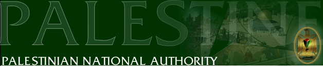

 |
Statement
The development cooperation between the Federal Republic of Germany and the Palestinian Authority Negotiations for the year 2000
May 9-10 2000
Negotiations between the German and Palestinian side on development cooperation have been concluded in Germany/Bonn on May 9 and 10, 2000. The Palestinian delegation was headed by Dr. Nabeel Shaath, Minister of Planning and International Cooperation. The German delegation was headed by Dr. Volker Ducklau, Director for the Mediterranean Area, The Middle East and Latin America at the Federal Ministry for Economic Co-operation and Development.
The German side underlined that cooperation with the Palestinian Authority would continue to be an integral part of its regional development strategy which was aimed at achieving full peace, stability and development.
The total volume of the German Financial and Technical Cooperation with the Palestinian Authority amounts to approximately DM 464.9 million. The Total volume of the Financial Cooperation thus has reached approximately DM 322.5 million. The total volume of Technical Cooperation amounts to DM 142.4 million.
The government of the Federal Republic of Germany committed a total of DM 70.0 million to the Palestinian Authority in 2000 for projects under Financial Cooperation. Of this amount DM 15.0 million are designed for projects under bilateral and DM 55.0 million for projects under regional Financial Cooperation. A total of DM 17.0 million for projects under Technical Cooperation.
As future cooperation is concerned, the German side stated that:” in pursuance of the Berlin Declaration, future cooperation will aim at fostering democratic development and economic and social progress both being the most important elements of future national statehood. The situation of the Palestinian refugees and displaced Palestinians will be given particular attention in future bilateral cooperation”.
End of Statement
* Source of information “ Summary Record of Negotiations on Palestinian-German Development Cooperation 2000
Home | Index | Related Sites | Feed Back